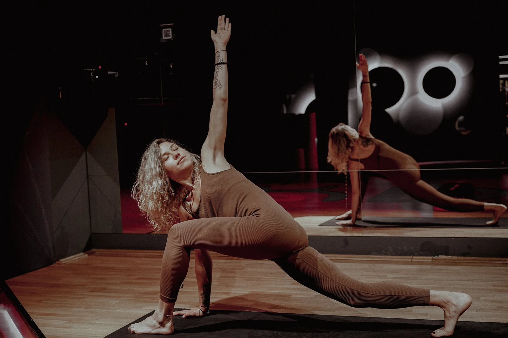

В своём темпе
Без соревнований. С правом сделать паузу и выбрать движение, которое подходит сегодня.
Почувствовать тело. Услышать дыхание.
Найти свой ритм — на коврике и за его пределами.
Без соревнований. С правом сделать паузу и выбрать движение, которое подходит сегодня.
Не гнаться за красивой формой, а замечать ощущения. Практика начинается с этого внимания.
Небольшое пространство для себя внутри большого дня. На коврике, дома, где вам удобно.
Виктория Носкова
Практикую йогу с 2006 года.
Я начинала с мягкой и в то же время глубокой практики по методу Б. К. С. Айенгара. На первых занятиях опоры помогали мне почувствовать работу мышц в каждой асане. Несколько лет я практиковала аштанга-йогу.
Сегодня я преподаю классическую хатха-йогу, йогу в гамаках и SUP-йогу — практику на воде на сапбордах. На занятиях уделяю особое внимание тому, как выстроить положение тела в асане. В шавасане всегда звучит тибетская чаша или другой живой инструмент.
Я провожу йога-нидру и медитации с гонгом, тибетскими чашами и другими этническими инструментами. Организую йога-туры к морю, выездные семинары и ретриты выходного дня. Ом 🙏🏻
Никуда не нужно успевать.
Побудьте здесь один спокойный момент.
Выберите практику по настроению.
Пример недельного расписания
Стоимость занятий ↓
Расписание и стоимость приведены для примера. Время — московское. Запись откроется после запуска проекта.
Одно знакомство или маленькая традиция.
Место для практики найдётся всегда.
Познакомиться с подходом
и прислушаться к ощущениям.
Время для себя,
которое уже есть в календаре.
Личное пространство
для ваших вопросов и задач.
Все цены — примеры для согласования. Онлайн-оплата пока не подключена.
Мастер-классы и выездные практики.
Идеи встреч, которые ещё впереди.

Мягкое движение, внимание к дыханию и время, которое принадлежит только вам.
Движение, детали и моменты между.
Фотографии из съёмки преподавателя.
Гибкость не является условием для начала. Выберите практику для начинающих и заранее расскажите преподавателю о своём опыте.
Удобную одежду, которая не ограничивает движения, и воду. Наличие коврика в зале нужно будет уточнить после публикации реального адреса.
Планируется практика по видеосвязи. Платформа, ссылка и правила участия появятся после согласования с преподавателем.
Пока это демонстрация сайта. Формы показывают будущий процесс записи, но не отправляют заявки и не принимают оплату.
Если выбираете первую практику или хотите узнать о ближайшем выезде, напишите мне.
Написать Виктории в Telegram ↗Город и адрес зала уточняются
Здесь появятся настоящие истории
и впечатления после практики.